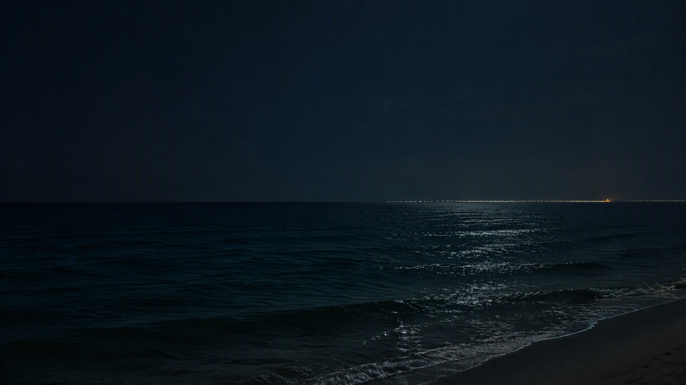

VIDEO NOTE 01
01
Vlog #1
一段留给自己的动态记忆。
PERSONAL ARCHIVENO. 001—
电影、路上的光，和一些舍不得关掉的声音。
这不是影评，只是我的私人收藏夹。
THE FILM SHELF 01 / COLLECTION
一些反复想起的电影。
展开条目，读手帐、看剧照。
所有画面来自我的私人片单与收藏
MOVING MEMORIES 02 / VIDEOS
不止电影，也有我自己的片段。
按下播放，再慢慢看。
一段留给自己的动态记忆。
第二段视频收藏。
SCENES THAT STAY 03 / FILM CLIPS
短短几分钟，也值得单独留一页。
需要时再播放，不会自动加载。
有些电影结束了，
却会在心里多放一会儿。
STILLS & LITTLE THINGS 03 / PHOTOGRAPHY
截图之外，也收一点日常。
每张照片，都留着当时的感受。
SOUNDTRACK FOR SLOW DAYS 04 / LISTENING
有些歌会和某一段时间绑在一起。
这里留一小张，我常听的播放清单。
选择一首歌，开始播放。

LISTENING NOTE / 01 2026.09.20 · AIMER凌晨两点，岸边又传来歌声。一首歌把我留在不肯睡的那一夜 ↗WORDS KEPT AFTER DARK 05 / ARTICLES
音乐入夜，漫画旅社。
把写过的话，也留在这本手帐里。
A NOTE FROM THE OWNER 05 / ABOUT
这里收着我看过的电影、喜欢的声音，还有一些想留住的时刻。没有复杂的分类规则，也不需要标准答案——喜欢，就先放进来。
— Yizima ✳
A NOTE LEFT HERE 06 / GUESTBOOK
不留姓名，只留此刻想说的话。
这里的便签会和每位访客共享。